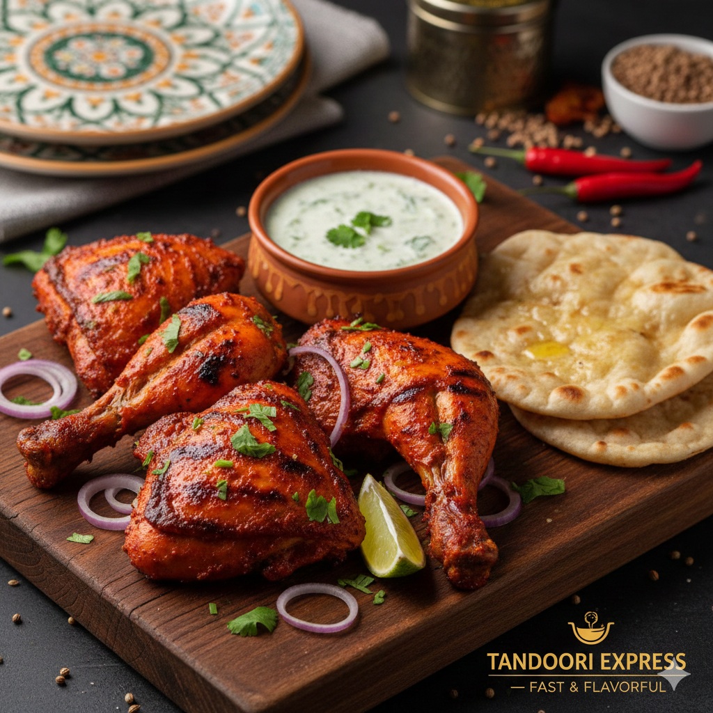
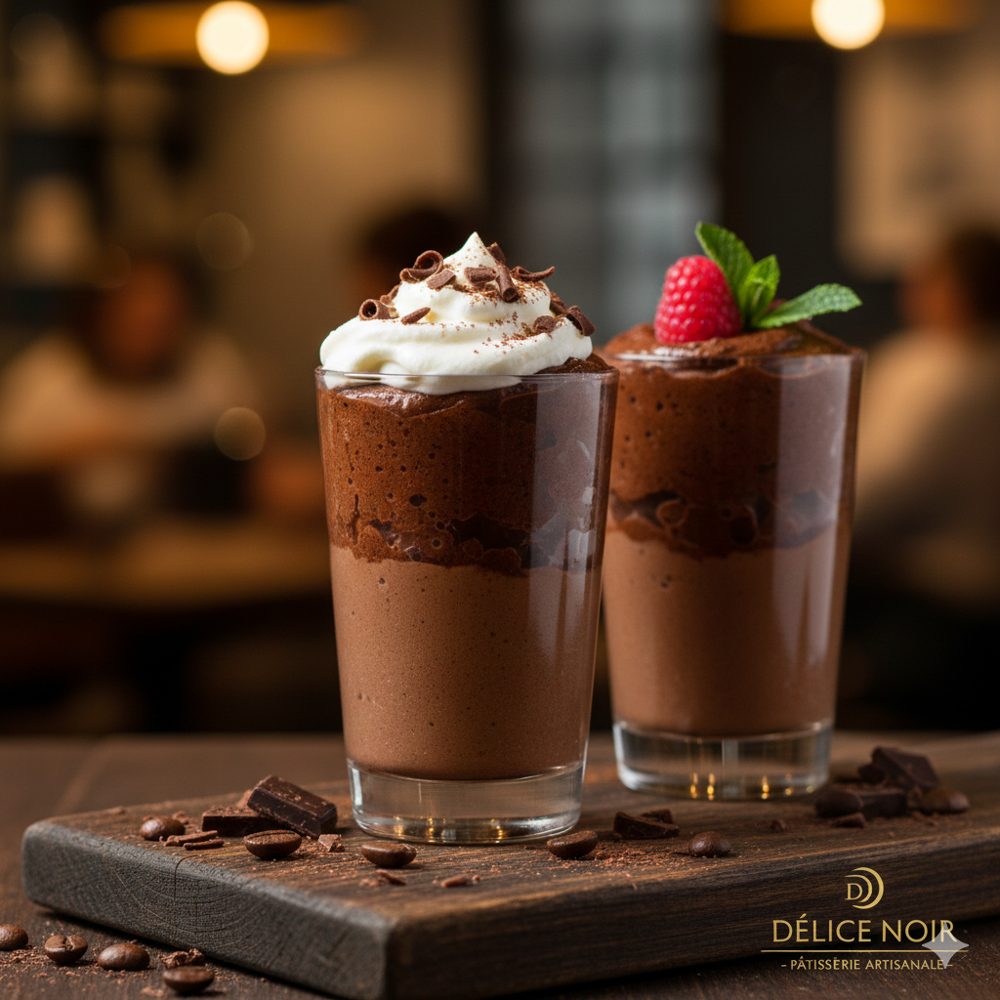
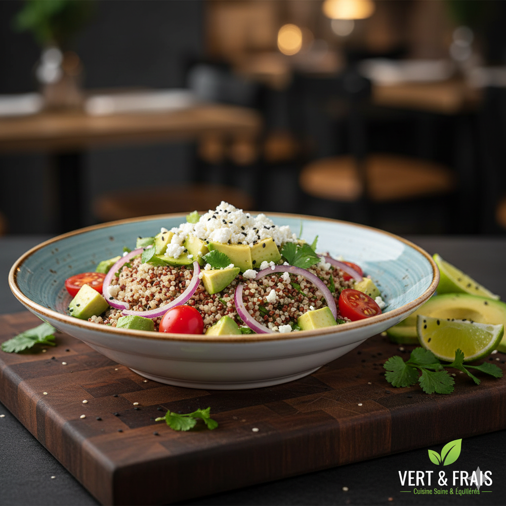

Poulet Tandoori Rapide
Un classique indien, prêt en moins de 30 minutes.
Voir la recettePlus de 1000 plats à découvrir, filtrer et partager.

Un classique indien, prêt en moins de 30 minutes.
Voir la recette
Légère, aérienne et riche en cacao. Parfait pour les desserts.
Voir la recette
Une entrée végétarienne fraîche, saine et pleine de saveurs.
Voir la recette